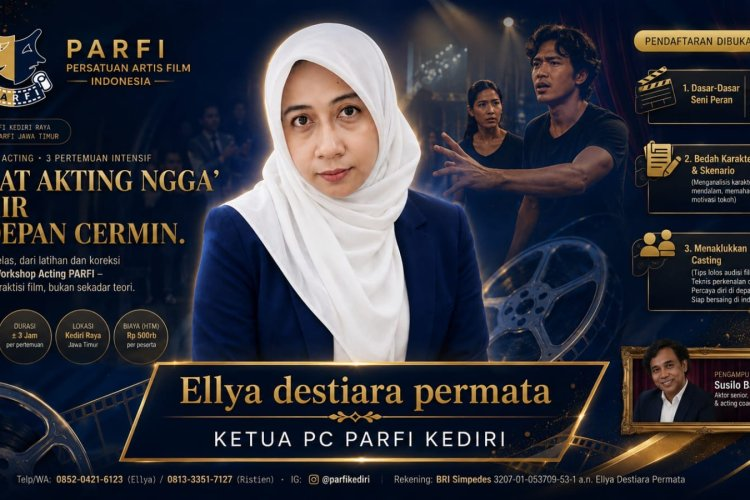

KEGIATAN PARFI · 3 SEP 2026

PC PARFI Kediri Gandeng PARFI Jatim Gelar Workshop Acting, Siapkan Talenta Lokal Menembus Industri Film.
Workshop Acting 13–15 November 2026 menghadirkan Susilo Badar untuk memperkuat kesiapan talenta lokal di industri film.
Sumber: File News
Baca selengkapnya ↗